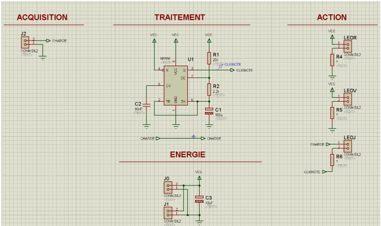
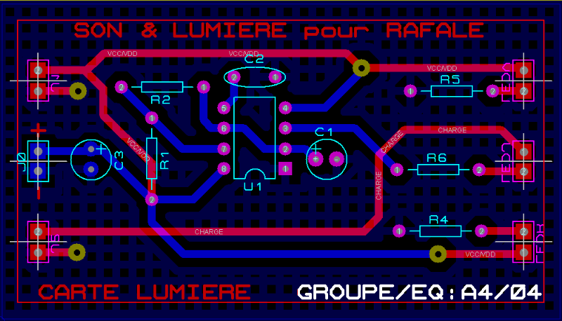

Projet SLR (Allumage LED Rafale)
Projet en binôme | Découverte de la création de carte
Contexte & Objectif
Ce projet était une introduction extrêmement guidée. L'objectif était de réussir à gérer le clignotement de LEDs électroniquement. Il a permis une découverte progressive de la suite Proteus et une introduction globale au GEII. Le travail a été réalisé en binôme.
Apprentissage par l'erreur
Ce projet a été un véritable apprentissage par l'échec. Nous avons fait de multiples erreurs que nous ne referons plus : un rendu en retard, une très mauvaise gestion du temps en ayant tout fait à la dernière minute, ainsi que des soudures ratées. Loin d'être une défaite, ce projet fondateur nous a permis d'apprendre comment ne plus reproduire ces erreurs lors des projets suivants.
Méthodologie du Projet
Le projet SLR (Allumage LED Rafale) a introduit les bases de la gestion de projet et de la conception de cartes, structurées en plusieurs phases :
- Phase de Conception : Appréhension du cahier des charges, initiation au schéma structurel avec Isis et première expérience de routage avec Ares.
- Phase de Fabrication : Découverte du processus d'insolation, de perçage et apprentissage des bases de la soudure de composants.
Consulter les documents du projet :
Galerie du projet

